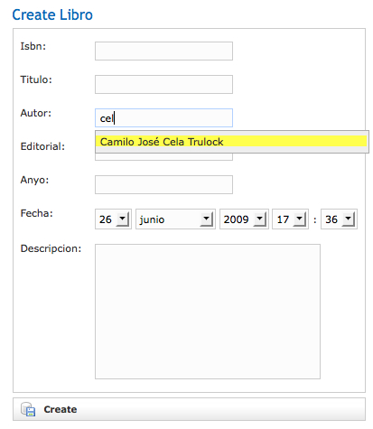

AJAX
Sería imposible pensar en un nuevo framework de desarrollo web sin hablar de AJAX. AJAX es el acrónimo de Asynchronous Javascript and XML y se suele hablar de este término para referirse a nuevas características en la implementación de aplicaciones que las convierten en más amenas y ágiles para el usuario final.
En esta sesión vamos a ver como Grails interactúa con AJAX por medio de los diferentes frameworks existentes en el mercado, así como con algunos plugins que implementan las típicas características AJAX, tales como los autocompletados y la posibilidad de editar la información al mismo tiempo que se está viendo, más conocida como editInPlace.
Frameworks AJAX
Grails dispone de varios frameworks AJAX por defecto, entre los que se encuentran Prototype, YUI (Yahoo User Interface), Script.aculo.us, Dojo y jQuery. Incluso ya se tiene soporte para el framework AJAX de Google (Google Web Toolkit).
Para utilizar cualquiera de estos frameworks, debemos indicar al inicio de nuestras páginas cual de todos vamos a utilizar por medio de la etiqueta GSP <g:javascript>. Estás serían las llamadas necesarias para utilizar cualquiera de estos frameworks:
- <g:javascript library="prototype">
- <g:javascript library="scriptaculous">
- <g:javascript library="yui">
- <g:javascript library="dojo">
- <g:javascript library="jquery">
Los dos primeros frameworks vienen instalados por defecto con Grails. Sin embargo, debido al tamaño de Dojo, éste no ha sido incluido en la distribución. Así que si optásemos por utilizar este framework, en primer lugar deberíamos instalarlo mediante el comando grails install-plugin dojo. Lo mismo deberíamos hacer con el framework YUI mediante el comando grails install-plugin yui.
Cada uno de estos frameworks tiene sus propios componentes y formas de acceder a ellos. Sin embargo, Grails ofrece la posibilidad de acceder a algunos métodos básicos con una capa superior que envuelve cada uno de estos frameworks para facilitarnos la labor. Estos métodos son los siguientes.
| Etiqueta | Descripción |
|---|---|
| remoteField | Crea un campo de texto que envía su valor a un enlace remoto cuando éste cambia su valor |
| remoteFunction | Crea una llamada a un método remoto en javascript que puede ser asignada a un evento del DOM |
| remoteLink | Crea un enlace que llama a una función remota |
| formRemote | Crea un formulario que ejecuta una llamada AJAX cuando se envía el formulario |
| javascript | Carga una determinada función Javascript |
| submitToRemote | Crea un botón que envía una llamada como una función remota |
A continuación, vamos a desarrollar algunos ejemplo con cada una de estas etiquetas para comprobar su funcionamiento. De esta forma, veremos las funcionalidades mínimas que nos ofrecen los frameworks comentados anteriormente. En estos ejemplos, vamos a utilizar jQuery y como siempre lo primero que deberíamos hacer es instalarlo como un plugin externo.
La instalación del plugin de jQuery debe seguir un par de pasos muy sencillo para su posterior utilización. En primer lugar, debemos instalarlo mediante el comando grails install-plugin jquery. Posteriormente debemos añadir en el archivo de configuración Config.groovy la siguiente línea:
grails.views.javascript.library = "jquery"
Por último y como se comentaba en párrafos anteriores, para poder utilizar el plugin en nuestra aplicación debemos incluir la etiqueta <g:javascript library="jquery" plugin="jquery"/> en aquellas vistas donde deseemos utilizarlo o bien incluirlo de forma más general únicamente en el archivo de layout que pinta nuestra aplicación, en nuestro caso el archivo grails-app/views/layouts/main.gsp.
Ejemplos sencillos
Etiqueta remoteField
La etiqueta <remoteField/> crea un elemento de formulario de tipo texto que permite invocar un enlace cuando éste cambia su valor. Los parámetros que admite son los siguientes:
| Parámetro | Obligatorio | Descripción |
|---|---|---|
| name | Sí | Especifica el nombre del elemento del formulario |
| value | No | El valor inicial para el elemento del formulario |
| paramName | No | El nombre del parámetro enviado al servidor |
| action | No | El nombre de la acción a utilizar con el enlace. En caso de que no se especifique nada, se utilizará la acción por defecto |
| controller | No | El nombre del controlador a utilizar con el enlace. En caso de que no se especifique nada, se utilizará el controlador actual |
| id | No | El id utilizado en el enlace |
| update | No | Contendrá, bien un mapa con los elementos a actualizar en caso de éxito o fallo en la operación, o una cadena con el elemento a actualizar. |
| before | No | Una función javascript que se invocará antes de realizar la llamada a la función remota |
| after | No | Una función javascript que se invocará después de realizar la llamada a la función remota |
| asynchronous | No | Indica si la llamada se realiza de forma asíncrona o no. Por defecto este valor es true |
| method | No | El método a utilizar al realizar la llamada. Por defecto se utilizar el método POST |
Un buen ejemplo para probar esta función, puede ser comprobar la disponibilidad de los nombres de usuario cuando se registran nuevos usuarios. Todos sabemos lo incómodo que es ir probando un nombre de usuario detrás de otro, hasta encontrar aquel que no está ya seleccionado. Esto añadirá a nuestros usuarios cierta comodidad en el registro.
Para hacer esto, el campo de texto referente a la propiedad login de la vista register.gsp lo vamos a cambiar para que quede como en el siguiente fragmento de código.
<tr class="prop">
<td valign="top" class="name">
<label for="login">Login:</label>
</td>
<td valign="top" class="value ${hasErrors(bean:usuarioInstance,field:'login','errors')}">
<g:remoteField action="checkLogin" update="spanCheckLogin" name="login" paramName="login"/>
<span id="spanCheckLogin"></span>
</td>
</tr>
No sólo hemos introducido la etiqueta remoteField sino que también hemos añadido una etiqueta <span> para poder introducir un texto que nos indique si el nombre de usuario escogido es correcto o no.
En la etiqueta remoteField hemos definido los parámetros action que contiene el nombre del método que vamos a definir en el controlador de la clase Usuario, update para indicarle donde escribir los resultados devueltos desde el controlador, el nombre del elemento del formulario login y el nombre del parámetro enviado al servidor con paramName. Sólo nos quedaría definir el método checkLogin() en el controlador de la clase Usuario.
def checkLogin = {
def usuario = Usuario.findByLogin(params.login)
if (!usuario)
render("OK")
else
render("Nombre ya escogido por otro usuario")
}
El método checkLogin() comprueba que el nombre de usuario no esté ya seleccionado para otro usuario registrado y en caso de no existir, devuelve el texto OK. En caso contrario, indicará el texto Nombre de usuario escogido por otro usuario. Esto se hace con la función render() pasándole como parámetro la cadena de texto a devolver, algo que es muy habitual cuando se utilizan etiquetas AJAX.
Habrá que realizar los cambios oportunos en nuestros filtros de seguridad para que cualquier usuario (registrado o no) pueda acceder a este método.
Etiqueta remoteFunction
Esta etiqueta permite especificar una función remota que se invocará cuando se produzca un evento del DOM. Un uso de esta etiqueta podría ser el mismo ejemplo que acabamos de realizar con la etiqueta remoteField. Cuando modifiquemos el valor del elemento de formulario login de la página register.gsp, vamos a realizar una llamada a una función para comprobar si el usuario está o no registrado en nuestro sistema.
La etiqueta remoteFunction acepta los siguientes parámetros:
| Parámetro | Obligatorio | Descripción |
|---|---|---|
| action | No | El nombre de la acción a utilizar con el enlace. En caso de que no se especifique nada, se utilizará la acción por defecto |
| controller | No | El nombre del controlador a utilizar con el enlace. En caso de que no se especifique nada, se utilizará el controlador actual |
| id | No | El id utilizado en el enlace |
| update | No | Contendrá, bien un mapa con los elementos a actualizar en caso de éxito o fallo en la operación, o una cadena con el elemento a actualizar. |
| before | No | Una función javascript que se invocará antes de realizar la llamada a la función remota |
| after | No | Una función javascript que se invocará después de realizar la llamada a la función remota |
| asynchronous | No | Indica si la llamada se realiza de forma asíncrona o no. Por defecto este valor es true |
| method | No | El método a utilizar al realizar la llamada. Por defecto se utilizar el método POST |
| params | No | Parámetros para enviar al controlador |
Vamos a modificar el ejemplo anterior para que ahora se utilice la etiqueta remoteFunction. En primer lugar modificamos el código de la página register.gsp para volver a tener un simple campo de texto.
<tr class="prop">
<td valign="top" class="name">
<label for="login">Login:</label>
</td>
<td valign="top" class="value ${hasErrors(bean:usuarioInstance,field:'login','errors')}">
<input type="text" maxlength="20" id="login" name="login" value="" onChange="${remoteFunction(action:"checkLogin", update:"spanCheckLogin", params:"'login='+this.value")}"/>
<span id="spanCheckLogin"></span>
</td>
</tr>
El método checkLogin() del controlador de la clase Usuario no cambiará. Si ahora echamos un vistazo a la aplicación, veremos como ya no se comprueba el nombre de usuario cada vez que se introduce un nuevo carácter, sino que sólo se comprobará la disponibilidad una vez el usuario cambie a otro elemento de formulario. Este método nos deja mayor libertad de movimientos.
Etiqueta remoteLink
Esta etiqueta permite realizar llamadas a una función remota para realizar una determinada acción a partir de un enlace. Un ejemplo de esta funcionalidad puede ser la recarga parcial de determinadas partes de una página.
Podemos utilizar los siguientes parámetros:
| Parámetro | Obligatorio | Descripción |
|---|---|---|
| action | No | El nombre de la acción a utilizar con el enlace. En caso de que no se especifique nada, se utilizará la acción por defecto |
| controller | No | El nombre del controlador a utilizar con el enlace. En caso de que no se especifique nada, se utilizará el controlador actual |
| id | No | El id utilizado en el enlace |
| params | No | Parámetros para enviar al controlador en forma de mapa |
| update | No | Contendrá, bien un mapa con los elementos a actualizar en caso de éxito o fallo en la operación, o una cadena con el elemento a actualizar. |
| before | No | Una función javascript que se invocará antes de realizar la llamada a la función remota |
| after | No | Una función javascript que se invocará después de realizar la llamada a la función remota |
| asynchronous | No | Indica si la llamada se realiza de forma asíncrona o no. Por defecto este valor es true |
| method | No | El método a utilizar al realizar la llamada. Por defecto se utilizar el método POST |
Imagina que tenemos una serie de pestañas con unas opciones y que al hacer clic en cada una de ellas, se debe mostrar en una capa situada en la parte inferior a las pestañas la información referente a dicha pestaña. Podríamos tener algo así:
<ul>
<li>
<g:remoteLink action="showTab" params="[id:'1']" update="tabcontent">
Primero
</g:remoteLink>
</li>
<li>
<g:remoteLink action="showTab" params="[id:'2']" update="tabcontent">
Segundo
</g:remoteLink>
</li>
<li>
<g:remoteLink action="showTab" params="[id:'3']" update="tabcontent">
Tercero
</g:remoteLink>
</li>
</ul>
<div id="tabcontent"></div>
Esto sería en la página GSP correspondiente, mientras que deberíamos añadir un nuevo método showTab() al controlador correspondiente con el código a ejecutar.
def showTab = {
render("Contenido ${params.id}")
}
Etiqueta formRemote
Mediante esta etiqueta podemos crear un formulario que se ejecutará remotamente al enviarlo. Los parámetros que puede recibir son los siguientes
| Parámetro | Obligatorio | Descripción |
|---|---|---|
| url | Sí | La URL que se encargará de gestionar el formulario. Se especifica en forma de mapa de valores con la acción, controlador e identificador |
| name | No | El nombre del formulario |
| action | No | El nombre de la acción que se ejecutará cuando se vuelva de ejecutar el formulario remoto |
| update | No | Contendrá, bien un mapa con los elementos a actualizar en caso de éxito o fallo en la operación, o una cadena con el elemento a actualizar. |
| before | No | Una función javascript que se invocará antes de realizar la llamada a la función remota |
| after | No | Una función javascript que se invocará después de realizar la llamada a la función remota |
| asynchronous | No | Indica si la llamada se realiza de forma asíncrona o no. Por defecto este valor es true |
| method | No | El método a utilizar al realizar la llamada. Por defecto se utilizar el método POST |
Vamos a crear un ejemplo de ejecución de un formulario de forma remota. Este formulario tratará de identificar a los usuarios de nuestra aplicación. En primer lugar, debemos modificar el archivo login.gsp para añadir el siguiente código.
<g:formRemote name="miForm" update="content" action="list" url="${[action:'handleLogin']}">
Login: <input name="login" type="text"/>
Password: <input name="password" type="password"/>
<input type="submit" value="Enviar"/>
</g:formRemote>
<div id="content"></div>
Si probamos este código, comprobaremos como al identificarnos en el sistema, la capa llamada content se sustituye con el contenido del listado de los usuarios, tal y como le hemos indicado en el parámetro action. El método que se encarga de autenticar al usuario es handleLogin(). No debemos olvidarnos de incluir la llamada a la librería javascript correspondiente al inicio de la página GSP.
Etiqueta javascript
Esta etiqueta permite la inclusión de funciones javascript en nuestras páginas GSP de tres formas diferentes gracias a los tres parámetros que acepta.
| Parámetro | Obligatorio | Descripción |
|---|---|---|
| library | No | El nombre de la librería a incluir. Puede ser prototype, scriptaculous, yui o dojo |
| src | No | El nombre del archivo javascript a incluir. Se buscará este archivo en el directorio /app/js |
| base | No | Permite indicarle una ruta absoluta para cargar el archivo js correspondiente |
Además, también podemos utilizar esta etiqueta para definir nuestras propias funciones en el propio archivo GSP.
<g:javascript src="miscript.js" />
<g:javascript library="scriptaculous" />
<g:javascript>alert('hola a tod@s')</g:javascript>
Etiqueta submitToRemote
Esta etiqueta tiene la misma funcionalidad que formRemote, pero en este caso creando un botón de tipo submit que enviará los datos introducidos a una función remota donde serán analizados. Los parámetros que acepta son los siguientes
| Parámetro | Obligatorio | Descripción |
|---|---|---|
| url | Sí | La URL que se encargará de gestionar el formulario. Se especifica en forma de mapa de valores con la acción, controlador e identificador |
| action | No | El nombre de la acción que se ejecutará cuando se vuelva de ejecutar el formulario remoto |
| update | No | Contendrá, bien un mapa con los elementos a actualizar en caso de éxito o fallo en la operación, o una cadena con el elemento a actualizar. |
| before | No | Una función javascript que se invocará antes de realizar la llamada a la función remota |
| after | No | Una función javascript que se invocará después de realizar la llamada a la función remota |
| asynchronous | No | Indica si la llamada se realiza de forma asíncrona o no. Por defecto este valor es true |
| method | No | El método a utilizar al realizar la llamada. Por defecto se utilizar el método POST |
El siguiente ejemplo es una modificación del código de la página login.gsp para sustituir el botón submit por otro que actúe de forma remota. Vamos a modificar la parte donde aparece el botón de envío de los datos por el siguiente código.
<div class="buttons">
<span class="button"><g:submitToRemote update="content" url="${[action:'handleLogin']}" value="Enviar"/></span>
<div id="content"></div>
</div>
Ejemplos de uso
Una vez vistos algunos ejemplos de como puede mejorar AJAX la experiencia de los usuarios de nuestras aplicaciones, vamos a ir un paso más allá introduciendo algunas características que hoy en día son muy comunes en las aplicaciones web.
La característica editInPlace se refiere a la posibilidad de editar determinada información sin tener que recurrir a un formulario de edición. Uno de los primeros sitios en proporcionar esta característica fue Flickr donde los usuarios podían editar el nombre de sus fotos al mismo tiempo que las visualizaban.
Mediante los autocompletados, los usuarios dispondrán de una ayuda en la búsqueda de determinados textos. Recientemente, el buscador Google ha añadido esta características en sus búsquedas.
editInPlace
Habitualmente, cuando queremos modificar el valor de una determinada propiedad, necesitamos modificar todo los datos del objeto. Esto no es lógico, puesto que si sólo tenemos que modificar una propiedad, ¿por qué tenemos que editarlas todas?. Para evitar estos problemas, vamos a proporcionarle al usuario la posibilidad de que edite las propiedades al mismo tiempo que las está viendo.
En nuestra aplicación, cuando listamos los libros de los que dispone la biblioteca, estaría bien que pudiésemos editar el nombre de los libros para corregir rápidamente erratas que se pueden producir, sin tener que editar de nuevo toda la información. Aquí será donde incluyamos la característica editInPlace en nuestra aplicación.
En primer lugar, vamos a crear una nueva librería de etiquetas que nos permita implementar una nueva etiqueta llamada editInPlace a la cual le pasaremos una serie de parámetros que realizarán la funcionalidad requerida. La nueva librería de etiquetas la llamaremos AjaxTagLib y la crearemos en el directorio grails-app/taglib.
package biblioteca
class AjaxTagLib {
def editInPlace = {attrs, body ->
def id = attrs.id
out << "<span id='${id}' onClick=\"javascript:\$('#input${id}').show();\$('#${id}').hide();\">"
out << body()
out << "</span>"
out << "<div id='input${id}' style='display:none;'>"
out << "<form name='editInPlace${id}'>"
out << "<input type='text' name='${attrs.paramName}' value='${body()}'/>"
out << submitToRemote(update:id,
url:attrs.url,
value:'Guardar',
onSuccess:"javascript:\$('#input${id}').hide();\$('#${id}').show();")
out << "</form>"
out << "</div>"
}
}
Esta etiqueta hace uso de algunas funciones básicas de jQuery para mostrar y ocultar determinadas capas en nuestro documento HTML.
Por otro lado, debemos añadir la llamada a la nueva etiqueta en el listado de libros. Esta etiqueta recibe como parámetros un identificador único, una url que gestionará la edición del campo, el número de filas y columnas del elemento del formulario y el nombre del parámetro enviado.
<g:editInPlace id="listlibros${libroInstance.id}" url="[controller:'libro', action:'editTitulo', id:libroInstance.id]" paramName="titulo">
${libroInstance.titulo}
</g:editInPlace>
En esta etiqueta, le estamos indicando que el método que debe gestionar la llamada es editTitulo(), el cual debemos definir en el controlador de la clase Libro.
def editTitulo = {
def libro = Libro.get(params.id)
libro.titulo = params.titulo
libro.save()
render params.titulo
}
El método editTitulo() simplemente recoge la información del libro a partir del id, posteriormente modifica su valor y por último, devuelve el valor escrito para que se muestre al usuario la modificación realizada.
Con la característica editInPlace, los usuarios dispondrán de una forma más efectiva y dinámica de editar determinada información.
Autocompletados
Otra de las características que recientemente están apareciendo en abundancia en las aplicaciones web son los autocompletados. Google lo ha incorporado en sus búsquedas y esto supone una ayuda extra al usuario a la hora de buscar determinada información.
En nuestra aplicación, un buen lugar para probar esta característica podría ser cuando editamos o creamos libros. El campo autor es una simple cadena de texto y que posiblemente, se repita habitualmente en nuestro sistema, con lo que mostrar al usuario un listado con los autores ya almacenados en la base de datos para que escoja entre ellos o bien siga escribiendo el autor, será otra ayuda más de cara al usuario final.
En la sesión anterior, instalamos el plugin RichUI que nos permitía incluir en la aplicación la posibilidad de editar texto enriquecido. Este plugin no sólo tiene esta posibilidad y en la página oficial del plugin encontrarás todas las opciones de este interesantísimo plugin.
Para utilizar este plugin en nuestras páginas GSP, debemos incluir al inicio de las mismas la etiqueta <resource:autoComplete skin="default" />. Posteriormente, vamos a sustituir la caja de texto correspondiente al autor en la creación de los libros por la siguiente etiqueta <richui:autoComplete name="autor" action="${createLinkTo('dir': 'libro/showAutores')}" />.
En esta etiqueta estamos definiendo el nombre del elemento del formulario (autor) y la acción que se encargará de realizar la búsqueda de los autores (libro/showAutores). Ahora sólo nos quedará definir el método en el controlador de la clase Libro que se encarga de la gestión.
def showAutores = {
def libros = Libro.createCriteria().listDistinct {
ilike("autor","%${params.query}%")
order("autor")
maxResults(5)
}
def librosaux = []
//Crea una respuesta en formato XML
render(contentType: "text/xml") {
results() {
libros.each { libro ->
if (!librosaux.any{it.autor==libro.autor}){
result(){
name(libro.autor)
}
librosaux.add(libro)
}
}
}
}
}
El siguiente código es un ejemplo del xml devuelto por el método showAutores().
<results> <result> <name> Miguel de Cervantes Saavedra </name> </result> <result> <name> Camilo José Cela Trúlock </name> </result> </results>
En la imagen que se muestra a continuación, se puede comprobar un ejemplo de uso del autocompletado.
